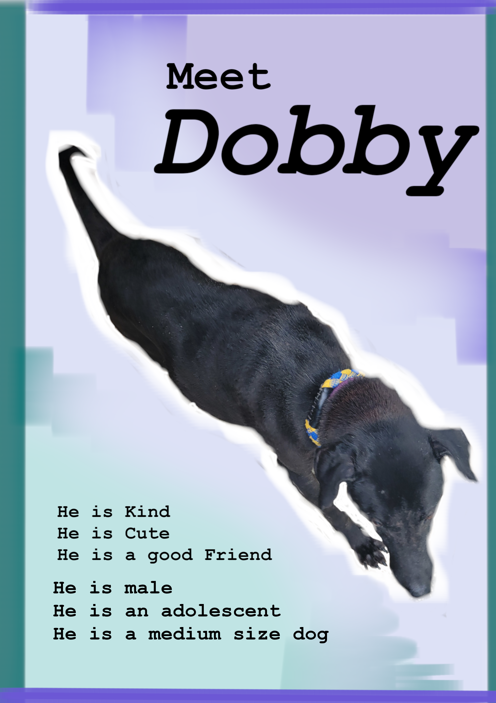

.gif) Charlize
Charlize
My Dog: Dobby

Info
Dobby
Gender: male
He is a mix
Age: He is an adolescent
He is very shy
He is very afraid of people, and he doesn't like taking photos.
He likes to eat and stay in a corner
I don’t know how he end up in the shelter (the workers are not sure too)
I don’t know who is his previous owner
Size: Medium
He is 75 to 85 cm long and 20 to 25 cm wide
Intro
Let me introduce you to Dobby, this furry cute friend is a very shy boy.
He is afraid of people but he is also friendly to people. He spends most of his time in a corner and
he
is always hungry.
He doesn't like to take photos but he will let you if you really need one.
He doesn't like to go too far away from where he has been staying for a long time, he likes to stay
in a
place he feels safe,
with his black fur, he can hide in a corner when he doesn't wanna face the world.
When you buy a dog, you get a pet, but when you adopt a dog, you save a dog’s life.
Many dogs that are in a shelter feel scared and lonely. They wait every day, hoping someone will
come
and take them home.
They don’t understand why they were left behind, some of them didn't even have a home before. But
they
still trust people.
They are still friendly to every human they’ve met. If you adopt a dog, you become their whole
world.
They will love you with all they have.
They will be happy just to see you. Even on your worst days, they will stay by your side.
You may think you are just getting a dog, but to that dog, you are everything. So choose to adopt.
Give them a second chance. If you don’t want a loud one, choose Dobby! He will be the best choice as
a
mate when you feel lonely.